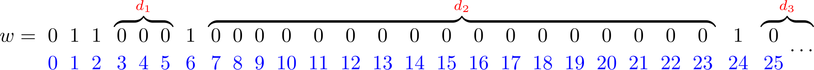
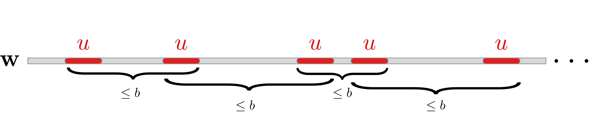
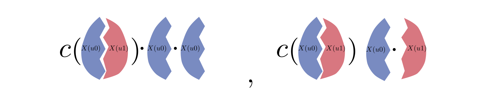

Adding Sets to MSO
The theory of monadic second order logic of $(\omega,<)$ was proved to be decidable by Julius Büchi in 1962. In this logic we are allowed to quantify over positions (members of $\omega$), sets of positions, use the total order $<$, test for membership $x\in X$, and use Boolean connectives $\wedge, \neg$. Its theory is the collection of the true sentences.
Sets $X$ that are definable in this logic are simple: if you see such a set $X$ as an infinite word $\mathbf{w}$ over the binary alphabet $\{0,1\}$ ($\mathbf{w}_{n}=1$ if and only if $n\in X$) it has the form $$ uv^{\omega} $$ for some $u,v\in\{0,1\}^{*}$, i.e. it is ultimately periodic.
It is natural to ask whether we can add a more complicated set $S\subset \omega$ and have the MSO theory of $(\omega,<,S)$ remain decidable. In this extended logic, $S$ is part of the signature, so we are allowed to test $x\in S$. In a sense, this problem has been solved. See this paper by Rabinovich and the references therein. There are two characterisations, one by Semenov, and one by Rabinovich.
Here I will report on an interesting, and related result by Semenov that says:
Theorem 1. (Semenov 1983) There are two sets $S_1,S_2\subset\omega$ such that the MSO theory of
- $(\omega,<,S_1)$, and $(\omega,<,S_2)$ is decidable, but
- that of $(\omega,<,S_1,S_2)$ is undecidable.
So the objective is to find two sets, such that each one alone is simple enough to yield a decidable theory, but together they encode some complicated information giving an undecidable theory. First, let us see some examples.
Examples
What is an example of a simple set $S\subset \omega$ whose MSO theory is undecidable? Of course we can choose some $S$ which is itself undecidable, but this is not useful. Denote by $p_{n}$ the $n$th prime number, and define: $$ S=\{p_{n}^{k}\ :\ n\text{th Turing machine halts in fewer than $k$ steps}\}. $$ Clearly $S$ is decidable, but it yields an undecidable MSO theory, because the sentence “the $n$th Turing machine halts” is equivalent to “there are inifnitely many numbers in $S$ that are divisible by $p_{n}$” — in MSO we can count modulo $p_{n}$.
What about sets that have decidable MSO theories? Again, we can take ultimately periodic sets, but as discussed before these are all MSO-definable, hence not useful. A non-trivial example is the set of factorials $\{n!\ :\ n\in\mathbb{N}\}$.
Sketch: why the factorials yield a decidable theory.
It follows from Büchi’s theorem that decidability of the theory of a set $S$ is equivalent to the decidability of the following problem: a non-deterministic Büchi automaton is given as input and we have to decide whether it accepts the characteristic word of $S$.
Let $\mathbf w\in\{0,1\}^{\omega}$ be the characteristic word of the set $\{n!\ :\ n\in\mathbb{N}\}$, it looks like this:  $d_{1},d_2,\ldots$ are the number of $0$s between consecutive $1$s. Since any Büchi automaton $\mathcal{A}$ has finite memory, it cannot count the number of $0$s precisely. This essentially means that there exists some $d\in\mathbb{N}$ — that depends only on the number of states of $\mathcal{A}$ — such that for any $e_1,e_2>d$, with $e_1\equiv e_2\mod d!$, we can replace a block of $e_1$ many zeros with a block with $e_2$ many zeros without the automaton $\mathcal{A}$ noticing. More precisely, construct the word $\mathbf w'$ from $\mathbf w$ by replacing all ${\color{red}d_i}>d$ with $d\le {\color{green}e_i}\le d!$ such that ${\color{red}d_i}\equiv {\color{green}e_i}\mod d!$. The automaton $\mathcal{A}$ either accepts both $\mathbf w$ and $\mathbf w'$ or rejects both of them. The final observation is that the word $\mathbf w'$ is ultimately periodic whence the decidability easily follows.
For the full proof of this and a few other examples consult this paper by Elgot and Rabin. Alas these positive examples do not seem to be beneficial for proving Theorem 1. For this, the correct notion appears to be that of an almost periodic word.
Almost periodic words
We say that a finite word $u$ occurs in an infinite one $\mathbf{w}$, if $\mathbf w_{n}\mathbf w_{n+1}\cdots \mathbf w_{n+k}=u$ for some $n,k$. Informally, an infinite word is almost periodic if the distance between the occurences is bounded. 
Definition 2. (almost periodic) $\mathbf w \in \Sigma^{\omega}$ is almost periodic if for every $u\in\Sigma^{*}$ there exists a bound $b\in\mathbb{N}$ such that one of the following holds:
- $u$ does not occur in $\mathbf w_{b}\mathbf w_{b+1}\mathbf w_{b+2}\cdots$
- $u$ occurs in every subword of $\mathbf w$ of length at least $b$
It is effectively almost periodic if there is a procedure computing such $b$.
There are many examples of almost periodic words that show up in various fields, such as Thue-Morse sequence, the word whose $n$th letter is $\mathrm{sgn}\left(\sin(n)\right)$, etc. The reason why they are interesting relative to Theorem 1, is because their MSO theory is decidable.
Theorem 2. (Semenov 1983) For effectively almost periodic $S$, the theory of $(\omega,<,S)$ is decidable.
The construction
Define the binary alphabet $$ \mathbb{B}=\left\{\begin{pmatrix}0\\ 0\end{pmatrix},\begin{pmatrix}0\\ 1\end{pmatrix},\begin{pmatrix}1\\ 0\end{pmatrix}, \begin{pmatrix}1\\ 1\end{pmatrix}\right\}. $$ The objective, for the proof of Theorem 1, now is to build a word $\mathbf w\in\mathbb B^{\omega}$ that contains some complicated information about Turing machines, similar to the negative example; yet $\mathbf w$ has to be such that the projections $\pi_{1}(\mathbf w)$, $\pi_{2}(\mathbf w)$ are themselves almost periodic.1
If I just write down the construction, it will leave too many questions unanswered, therefore in order to movitave the definition, I will first give a couple of failed attempts of reaching the goal.
Attempt 1
Let $\mathbf z$ be an infinite word over the binary alphabet, for example the word with the Turing machines from the example above. One brutish way of encoding it is as follows.
Partition the set $\mathbb B^{4}$ into $A_{0}, A_{1}$ such that $\pi_{i}(A_0)=\pi_{i}(A_1)$, $i\in\{1,2\}$. One such partition is to see $\mathbb B^{4}$ as the set of permutations of $\mathbb B$, and set $A_{0}$ to be the even permutations, and $A_{1}$ to be the odd ones. Belonging to the set $A_0$ or $A_1$ contains one bit of information, which is lost upon projection. We can certainly encode $\mathbf z$ by picking a word from the set: $$ A_{\mathbf z_0}A_{\mathbf z_1}A_{\mathbf z_2}A_{\mathbf z_3}\cdots. $$ The problem is that there are infinite words in the set above, that have a projection that is not almost periodic (we could, for example, always pick a particular word from $A_0$). One way of proving Theorem 1 would be to show that not all words in the set above are of that nature. But this is not the way in which we will proceed, because I don’t know how.
Attempt 2
To stop the phenomenon that made it easy to pick words with projections that are not almost periodic, we need to mix the words from the set somehow.
Definition 3. (function $c$, complete concatenation) Let $X$ be a finite set of finite words. A complete concatenation of $X$ is a word $u$ that is made from concatenating elements of $X$ such that for all $x,y\in X$, $xy$ is a subword of $u$. Define $c$ to be a function that inputs a finite set of finite words and outputs one such complete concatenation, of minimal length.
Consider the following definition:
\begin{align}
&W(0)=A_{0}\qquad W(1)=A_{1},\\
&\ \ \ \ \ \ W(ua)=c\left(W(u)\right)W(a).
\end{align}
Let $z_1,z_2,\ldots $ be a sequence of finite words with lengths $|z_{n}|=n$, such that $$ k\text{th letter of }z_{n}\text{ is }1\qquad \Leftrightarrow\qquad k\text{th Turing machine halts in fewer than }n\text{ steps}. $$
Words from the set $$ W=W(z_{1})W(z_{2})W(z_{3})\cdots, $$ contain the information about machines in the sequence $z_{1},z_{2},\ldots$, and moreover by induction we can prove the following lemma.
Lemma 4. For all $u,u'$ of the same length and $i\in\{1,2\}$ we have $$ \pi_i\left(W(u)\right)=\pi_i\left(W(u’)\right). $$ From where it follows that both projections of words in $W$ are almost periodic.
Lemma 5. For all $\mathbf w\in W$, $i\in\{1,2\}$, $\pi_{i}(\mathbf w)$ is almost periodic.
Proof. Use the definition of complete concatenation and the fact that the length of members of $W(0), W(1)$ is bounded.
Words from $W$ have projections with the desirable property, thanks to Lemma 5, and they contain the information for Turing machines; so where is the problem? The problem is that even though words from $W$ have the information, it cannot be accessed by MSO. In particular, there is no formula that is equivalent to “there exists some $n$, such that the $k$th letter of $z_{n}$ is $1$”. This is because the length of the elements in $W(ua)$ is not a very simple (in terms of MSO) function of the length of elements in $W(u)$. This situation would be remedied if we could somehow construct sets such that $W(ua)$ is made exclusively from concatenating elements of $W(u)$.
This brings us to the third and final attempt.
Attempt 3
The trick is as follows. Define an auxiliary set:
\begin{align}
&\qquad\qquad X(0)=A_{0}\qquad X(1)=A_{1}\\
&X(uab)=c\left(\ X(u0)\cup X(u1)\ \right)\ X(ua)\ X(ub).
\end{align}
and
$$
W(u)=X(u0)\cup X(u1).
$$
The words in $X(u)$ encode the information that is in $u$ by ordering the last two pieces, for example the difference between $X(u00)$ and $X(u01)$ is: 
Indeed, we can prove by induction that for $u,u'$, such that $u\ne u'$, $X(u)$ and $X(u’)$ are disjoint. Let us gather all the good properties of $W$ defined above.
- $W(u)$ and $W(u’)$ are disjoint for $u\ne u'$.
This follows from the discussion above, that the same statement is true for $X$, which can be proved by induction on the length of $u,u'$. If $u$ and $u'$ are of different lengths then the statement is clear.
- $W(ua)$ is built by concatenating elements of $W(u)$.
$W(ua)$ is the union of $X(ua0)$ and $X(ua1)$, each of which is built by concatenating elements of the sets $X(u0)$ and $X(u1)$. The union of $X(u0)$ and $X(u1)$ is the set $W(u)$.
- For $u,u'$ of the same length and $i\in\{1,2\}$, $\pi_{i}\left(W(u)\right)=\pi_{i}\left(W(u’)\right)$.
The proof is the same as in Attempt 2, by induction on the length of $u,u'$.
Let $z_{1}, z_2, z_3$ be the sequence of finite words from Attempt 2, that is words whose length is $|z_{n}|=n$ and such that $$ k\text{th letter of }z_{n}\text{ is }1\qquad \Leftrightarrow\qquad k\text{th Turing machine halts in fewer than }n\text{ steps}. $$ Define the set of infinite words: $$ W=W(z_1)W(z_2)W(z_{3})\cdots . $$
Using properties 2 and 3, we can prove that the projections of words in $W$ are all almost periodic.
Lemma 6. For all $\mathbf w\in W$, and $i\in\{1,2\}$, $\pi_{i}(\mathbf w)$ is almost periodic.
The information that is held in $z_1,z_2,\ldots$ is being deleted by projections. But how do we pull it out of elements of $W$ using MSO? In particular we want a formula that is equivalent to “there exists $n$, the $j$th letter of $z_{n}$ is $1$”, which in turn is equivalent to “$j$th Turing machine halts.”
Define the following langauge (of finitely many words) $$ L = \bigcup_{u\in\{0,1\}^{j-1}} W(u1), $$ and let $b$ be the length of its words. From Property 1, $L$ is disjoint from $W(u0)$ for any $u$ of length $j-1$. Further, Property 2 implies that for all $v$, $|v|>j$, that have a $1$ in the $j$th position, words in $W(v)$ are made by concatenating elements of $L$.
Let $a$ be the length of words in $$ W(z_{1})W(z_{2})\cdots W(z_{j-1}). $$ We can now easily prove the following lemma.
Lemma 7. Let $\mathbf w\in W$. The following statements are equvialent:
- There exists some $n$ such that $$ \mathbf w_{a+bn}\mathbf w_{a+bn+1}\cdots \mathbf w_{a+b(n+1)-1}\in L. $$
- There exists some $n$, such that the $j$th letter of $z_{n}$ is $1$
- The $j$th Turing machine halts.
Combining Lemma 7, 6 and Theorem 2, concludes the proof of Theorem 1.
Open problems
- Is there a simpler construction? Perhaps along the lines of Attempt 1?
-
Seen this way $\pi_{i}(\mathbf w)$ is the characteristic word of $S_i$, $i\in\{1,2\}$. ↩︎